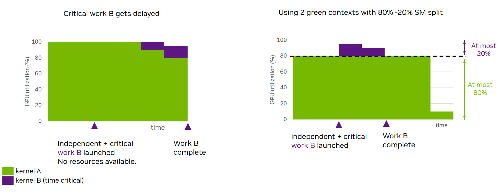

그린 컨텍스트(GC)는 생성 시점부터 특정 GPU 리소스 집합과 연결되는 경량 컨텍스트입니다. 사용자는 그린 컨텍스트 생성 중에 GPU 리소스(현재는 스트리밍 멀티프로세서(SM)와 워크 큐(WQ))를 분할할 수 있으며, 그린 컨텍스트를 대상으로 하는 GPU 작업은 제공된 SM과 워크 큐만 사용할 수 있습니다. 이렇게 하면 공통 리소스 사용으로 인한 간섭을 줄이거나 더 잘 제어하는 데 유리할 수 있습니다. 애플리케이션은 여러 개의 그린 컨텍스트를 가질 수 있습니다.
그린 컨텍스트를 사용한다고 해서 GPU 코드(커널)를 변경할 필요는 없고, 작은 호스트 측 변경(예: 그린 컨텍스트 생성 및 이 그린 컨텍스트를 위한 스트림 생성)만 필요합니다. 그린 컨텍스트 기능은 다양한 시나리오에서 유용할 수 있습니다. 예를 들어, 다른 제약이 없다는 가정하에 일부 SM을 항상 사용할 수 있게 하여 지연 시간에 민감한 커널이 실행을 시작하도록 보장하는 데 도움을 줄 수 있으며, 또는 커널 수정 없이 더 적은 SM을 사용하는 효과를 테스트하는 빠른 방법을 제공할 수 있습니다.
그린 컨텍스트 지원은 처음에 CUDA Driver API를 통해 제공되었습니다. CUDA 13.1부터는 실행 컨텍스트(EC) 추상화를 통해 CUDA 런타임에서 컨텍스트가 노출됩니다. 현재 실행 컨텍스트는 기본 컨텍스트(런타임 API 사용자가 항상 암묵적으로 상호작용해 온 컨텍스트) 또는 그린 컨텍스트 중 하나에 대응할 수 있습니다. 이 섹션에서는 그린 컨텍스트를 지칭할 때 실행 컨텍스트(execution context)와 그린 컨텍스트(green context)를 같은 의미로 사용합니다.
런타임에서 그린 컨텍스트가 노출됨에 따라, CUDA 런타임 API를 직접 사용하는 것을 강력히 권장합니다. 이 섹션에서도 CUDA 런타임 API만 사용합니다.
이 섹션의 나머지는 다음과 같이 구성되어 있습니다: Section 4.6.1에서는 동기 부여 예제를 제공하고, Section 4.6.2에서는 사용 편의성을 강조하며, Section 4.6.3에서는 디바이스 리소스 및 리소스 디스크립터 구조체를 제시합니다. Section 4.6.4에서는 그린 컨텍스트 생성 방법을 설명하고, Section 4.6.5에서는 이를 대상으로 하는 작업을 실행하는 방법을 설명합니다. 또한 Section 4.6.6에서는 몇 가지 추가 그린 컨텍스트 API를 강조합니다. 마지막으로 Section 4.6.7에서는 예제로 마무리합니다.
4.6.1. 동기 부여 / 사용 시점#
CUDA 커널을 실행할 때, 사용자는 해당 커널이 어느 정도의 SM에서 실행될지에 대해 직접적인 제어권이 없습니다. 커널의 실행 형상(launch geometry) 또는 SM당 활성 스레드 블록의 최대 수에 영향을 줄 수 있는 어떤 것이라도 변경함으로써 이를 간접적으로만 영향을 줄 수 있습니다. 또한 여러 커널이 GPU에서 병렬로 실행될 때(서로 다른 CUDA 스트림에서 실행되거나 CUDA graph의 일부로 실행되는 커널), 동일한 SM 리소스를 두고 경쟁할 수도 있습니다.
하지만 지연 시간에 민감한 작업이 가능한 한 빨리 시작하고, 따라서 가능한 한 빨리 완료될 수 있도록 항상 GPU 리소스를 사용할 수 있음을 보장해야 하는 사용 사례가 있습니다. 그린 컨텍스트는 SM 리소스를 분할함으로써 이를 가능하게 하는 한 가지 방법을 제공하며, 그 결과 특정 그린 컨텍스트는 특정 SM(생성 시 제공된 SM)만 사용할 수 있습니다.
그림 42는 이러한 예를 보여줍니다. 서로 독립적인 두 커널 A와 B가 서로 다른 두 개의 non-blocking CUDA 스트림에서 실행되는 애플리케이션을 가정해 보겠습니다. 커널 A가 먼저 실행(launch)되며, 사용 가능한 모든 SM 리소스를 점유한 채 실행을 시작합니다. 이후 시간 경과 후 지연 시간에 민감한 커널 B가 실행(launch)되면, 사용할 수 있는 SM 리소스가 없습니다. 그 결과, 커널 B는 커널 A가 감소(ramp down)한 뒤, 즉 커널 A의 스레드 블록이 실행을 마친 뒤에야 실행을 시작할 수 있습니다. 첫 번째 그래프는 중요한 작업 B가 지연되는 이 시나리오를 보여줍니다. y축은 점유된 SM의 백분율을 보여주고 x축은 시간을 나타냅니다.
{kind=link}

그림 42 동기: GC의 정적 리소스 분할은 지연 시간에 민감한 작업 B가 더 빨리 시작하고 완료할 수 있게 합니다#
그린 컨텍스트를 사용하면 GPU의 SM을 분할할 수 있는데, 커널 A가 타깃으로 하는 그린 컨텍스트 A는 GPU의 일부 SM에 접근할 수 있고, 커널 B가 타깃으로 하는 그린 컨텍스트 B는 나머지 SM에 접근할 수 있습니다. 이 설정에서는 커널 A가 런치 구성과 무관하게 그린 컨텍스트 A에 제공(provisioned)된 SM만 사용할 수 있습니다. 그 결과, 중요한 커널 B가 실행(launch)되면 다른 리소스 제약이 없는 한, 즉시 실행을 시작할 수 있는 SM을 확보할 수 있음이 보장됩니다. 그림 42의 두 번째 그래프가 보여주듯, 커널 A의 지속 시간이 늘어날 수는 있지만, 지연 시간에 민감한 작업 B는 사용 가능한 SM이 없어서 더 이상 지연되지 않습니다. 이 그림은 설명을 위해 그린 컨텍스트 A에 GPU SM의 80%에 해당하는 SM 개수가 제공됨을 보여줍니다.
이 동작은 커널 A와 B에 대한 어떤 코드 수정 없이도 달성할 수 있습니다. 적절한 그린 컨텍스트에 속한 CUDA 스트림에서 이들이 실행(launch)되도록 보장하기만 하면 됩니다. 각 그린 컨텍스트가 접근할 수 있는 SM의 수는 그린 컨텍스트 생성 시에 사용자에 의해 사례별로 결정되어야 합니다.
작업 큐:
Streaming multiprocessor는 그린 컨텍스트에 제공될 수 있는 한 가지 리소스 유형입니다. 또 다른 리소스 유형은 작업 큐(work queue)입니다.
작업 큐는 다른 요인들과 함께 GPU 작업 실행의 동시성에 영향을 줄 수 있는 블랙박스 리소스 추상화로 생각할 수 있습니다.
독립적인 GPU 작업 태스크(예: 서로 다른 CUDA 스트림에 제출된 커널)가 동일한 작업 큐에 매핑되면, 이 태스크들 사이에 거짓 의존성(false dependence)이 도입될 수 있으며,
이는 직렬화된 실행으로 이어질 수 있습니다.
사용자는 CUDA_DEVICE_MAX_CONNECTIONS 환경 변수를 통해 GPU의 작업 큐 상한을 조정할 수 있습니다(섹션 5.2, 섹션 3.1 참조).
이전 예를 바탕으로, 작업 B가 작업 A와 동일한 작업 큐에 매핑된다고 가정해 보겠습니다. 그 경우, SM 리소스를 사용할 수 있더라도(그린 컨텍스트의 경우), 작업 B는 작업 A가 완전히 완료될 때까지 여전히 대기해야 할 수 있습니다. SM과 마찬가지로, 사용자는 내부적으로 어떤 특정 작업 큐가 사용될지에 대해 직접적인 제어권이 없습니다. 하지만 그린 컨텍스트를 사용하면 사용자가 기대하는 동시성을, 동시에 실행되는 스트림 순서 워크로드의 예상 개수라는 관점에서 표현할 수 있습니다. 그러면 드라이버는 이 값을 힌트로 사용하여 서로 다른 실행 컨텍스트의 작업이 동일한 작업 큐를 사용하지 않도록 시도함으로써, 실행 컨텍스트 간의 원치 않는 간섭을 방지할 수 있습니다.
주의
그린 컨텍스트별로 서로 다른 SM 리소스와 작업 큐가 제공되더라도, 독립적인 GPU 작업의 동시 실행이 보장되지는 않습니다. Green Contexts 섹션에서 설명하는 모든 기법은 동시 실행을 막을 수 있는 요인을 제거하는 것(즉, 잠재적 간섭을 줄이는 것)으로 이해하는 것이 가장 좋습니다.
그린 컨텍스트 대 MIG 또는 MPS
완전성을 위해, 이 섹션에서는 그린 컨텍스트를 다른 두 가지 리소스 분할 메커니즘과 간단히 비교합니다: MIG (Multi-Instance GPU) 및 MPS (Multi-Process Service).
MIG는 MIG를 지원하는 GPU를 여러 MIG 인스턴스(“더 작은 GPU”)로 정적으로 분할합니다. 이 분할은 애플리케이션을 실행(launch)하기 전에 이루어져야 하며, 서로 다른 애플리케이션이 서로 다른 MIG 인스턴스를 사용할 수 있습니다. MIG를 사용하는 것은 애플리케이션이 사용 가능한 GPU 리소스를 지속적으로 충분히 활용하지 못하는 사용자에게 유익할 수 있는데, 이 문제는 GPU가 더 커질수록 더 두드러집니다. MIG를 사용하면 사용자는 이러한 서로 다른 애플리케이션을 서로 다른 MIG 인스턴스에서 실행할 수 있어 GPU 활용도를 개선할 수 있습니다. MIG는 이러한 애플리케이션의 GPU 활용도 증가뿐만 아니라, 서로 다른 MIG 인스턴스에서 실행되는 클라이언트 간에 제공할 수 있는 서비스 품질(QoS)과 격리(isolation) 때문에 클라우드 서비스 제공자(CSP)에게도 매력적일 수 있습니다. 자세한 내용은 위에 링크된 MIG 문서를 참조하십시오.
하지만 MIG를 사용하더라도 앞서 설명한 문제 시나리오, 즉 동일한 애플리케이션의 다른 GPU 작업이 모든 SM 리소스를 점유하여 중요한 작업 B가 지연되는 상황을 해결할 수는 없습니다. 이 문제는 단일 MIG 인스턴스에서 실행되는 애플리케이션에서도 여전히 존재할 수 있습니다. 이를 해결하기 위해 MIG와 함께 그린 컨텍스트를 사용할 수 있습니다. 그 경우, 분할에 사용할 수 있는 SM 리소스는 해당 MIG 인스턴스의 리소스가 됩니다.
MPS는 주로 서로 다른 프로세스(예: MPI 프로그램)를 대상으로 하며, 시간 분할(time-slicing) 없이 동일한 시점에 GPU에서 실행될 수 있도록 합니다. 이를 위해 애플리케이션이 실행(launch)되기 전에 MPS 데몬이 실행 중이어야 합니다. 기본적으로 MPS 클라이언트는 자신이 실행 중인 GPU 또는 MIG 인스턴스의 사용 가능한 모든 SM 리소스를 두고 경쟁합니다. 이 다중 클라이언트 프로세스 설정에서 MPS는 active thread percentage 옵션을 사용해 SM 리소스의 동적 분할을 지원할 수 있는데, 이는 MPS 클라이언트 프로세스가 사용할 수 있는 SM 비율의 상한을 설정합니다. 그린 컨텍스트와 달리, active thread percentage 분할은 MPS에서 프로세스 수준에서 이루어지며, 이 비율은 일반적으로 애플리케이션이 실행(launch)되기 전에 환경 변수로 지정됩니다. MPS active thread percentage는 특정 클라이언트 애플리케이션이 GPU의 SM 중 x%를 넘게 사용할 수 없음을 의미하며, 그것이 N개의 SM이라고 합시다. 하지만 이 SM들은 GPU의 임의의 N개 SM일 수 있고, 시간에 따라 달라질 수도 있습니다. 반면, 생성 시 N개의 SM이 제공된 그린 컨텍스트는 이 특정 N개의 SM만 사용할 수 있습니다.
CUDA 13.1부터 MPS는 MPS 제어 데몬을 시작할 때 명시적으로 활성화하면 정적 분할도 지원합니다. 정적 분할에서는 애플리케이션이 실행(launch)될 때 사용자가 MPS 클라이언트 프로세스가 사용할 수 있는 정적 분할을 지정해야 합니다. 그 경우 active thread percentage를 통한 동적 공유는 더 이상 적용되지 않습니다. 정적 분할 모드의 MPS와 그린 컨텍스트의 핵심적인 차이점은 MPS가 서로 다른 프로세스를 대상으로 하는 반면, 그린 컨텍스트는 단일 프로세스 내에서도 적용 가능하다는 점입니다. 또한 그린 컨텍스트와 달리, 정적 분할의 MPS는 SM 리소스의 오버서브스크립션(oversubscription)을 허용하지 않습니다.
MPS를 사용하면 실행 선호도(execution affinity)를 통해 cuCtxCreate 드라이버 API로 생성된 CUDA 컨텍스트에 대해서도 SM 리소스의 프로그래밍 방식 분할이 가능합니다.
이 프로그래밍 방식 분할은 하나 또는 그 이상의 프로세스에서 서로 다른 클라이언트 CUDA 컨텍스트가 각각 지정된 개수의 SM까지 사용할 수 있게 합니다.
active thread percentage 분할과 마찬가지로, 이 SM들은 GPU의 임의의 SM일 수 있으며, 그린 컨텍스트의 경우와 달리 시간에 따라 변할 수 있습니다.
이 옵션은 정적 MPS 분할이 존재하는 경우에도 가능합니다.
또한 그린 컨텍스트를 생성하는 것은 MPS 컨텍스트에 비해 훨씬 더 경량임을 유의하십시오. 많은 기본 구조가 primary context에 의해 소유되며 따라서 공유되기 때문입니다.
4.6.2. Green Contexts: 사용 편의성#
그린 컨텍스트의 사용이 얼마나 쉬운지 강조하기 위해, 두 개의 CUDA 스트림을 생성한 다음 이 CUDA 스트림에서 <<<>>>를 통해 커널을 실행(launch)하는 함수를 호출하는 다음 코드 스니펫이 있다고 가정해 보겠습니다.
앞서 논의했듯이, 커널의 런치 형상(launch geometry)을 변경하는 것 외에는, 이 커널들이 사용할 수 있는 SM의 수에 영향을 줄 수 없습니다.
int gpu_device_index = 0; // GPU ordinal
CUDA_CHECK(cudaSetDevice(gpu_device_index));
cudaStream_t strm1, strm2;
CUDA_CHECK(cudaStreamCreateWithFlags(&strm1, cudaStreamNonBlocking));
CUDA_CHECK(cudaStreamCreateWithFlags(&strm2, cudaStreamNonBlocking));
// No control over how many SMs kernel(s) running on each stream can use
code_that_launches_kernels_on_streams(strm1, strm2); // what is abstracted in this function + the kernels is the vast majority of your code
// cleanup code not shown
CUDA 13.1부터는 그린 컨텍스트를 사용하여, 특정 커널이 접근할 수 있는 SM의 수를 제어할 수 있습니다. 아래 코드 스니펫은 이를 얼마나 쉽게 할 수 있는지 보여줍니다. 몇 줄만 추가하고 커널을 수정하지 않아도, 서로 다른 이 스트림에서 실행되는 커널(들)이 사용할 수 있는 SM 리소스를 제어할 수 있습니다.
int gpu_device_index = 0; // GPU ordinal
CUDA_CHECK(cudaSetDevice(gpu_device_index));
/* ------------------ Code required to create green contexts --------------------------- */
// Get all available GPU SM resources
cudaDevResource initial_GPU_SM_resources {};
CUDA_CHECK(cudaDeviceGetDevResource(gpu_device_index, &initial_GPU_SM_resources, cudaDevResourceTypeSm));
// Split SM resources. This example creates one group with 16 SMs and one with 8. Assuming your GPU has >= 24 SMs
cudaDevSmResource result[2] {{}, {}};
cudaDevSmResourceGroupParams group_params[2] = {
{.smCount=16, .coscheduledSmCount=0, .preferredCoscheduledSmCount=0, .flags=0},
{.smCount=8, .coscheduledSmCount=0, .preferredCoscheduledSmCount=0, .flags=0}};
CUDA_CHECK(cudaDevSmResourceSplit(&result[0], 2, &initial_GPU_SM_resources, nullptr, 0, &group_params[0]));
// Generate resource descriptors for each resource
cudaDevResourceDesc_t resource_desc1 {};
cudaDevResourceDesc_t resource_desc2 {};
CUDA_CHECK(cudaDevResourceGenerateDesc(&resource_desc1, &result[0], 1));
CUDA_CHECK(cudaDevResourceGenerateDesc(&resource_desc2, &result[1], 1));
// Create green contexts
cudaExecutionContext_t my_green_ctx1 {};
cudaExecutionContext_t my_green_ctx2 {};
CUDA_CHECK(cudaGreenCtxCreate(&my_green_ctx1, resource_desc1, gpu_device_index, 0));
CUDA_CHECK(cudaGreenCtxCreate(&my_green_ctx2, resource_desc2, gpu_device_index, 0));
/* ------------------ Modified code --------------------------- */
// You just need to use a different CUDA API to create the streams
cudaStream_t strm1, strm2;
CUDA_CHECK(cudaExecutionCtxStreamCreate(&strm1, my_green_ctx1, cudaStreamDefault, 0));
CUDA_CHECK(cudaExecutionCtxStreamCreate(&strm2, my_green_ctx2, cudaStreamDefault, 0));
/* ------------------ Unchanged code --------------------------- */
// No need to modify any code in this function or in your kernel(s).
// Reminder: what is abstracted in this function + kernels is the vast majority of your code
// Now kernel(s) running on stream strm1 will use at most 16 SMs and kernel(s) on strm2 at most 8 SMs.
code_that_launches_kernels_on_streams(strm1, strm2);
// cleanup code not shown
이전 예에서 일부를 보여준 다양한 execution context API는 명시적인 cudaExecutionContext_t 핸들을 받아들이므로, 호출 스레드에 대해 현재(current)인 컨텍스트를 무시합니다.
지금까지 드라이버 API를 사용하지 않았던 CUDA runtime 사용자는 기본적으로 cudaSetDevice()를 통해 스레드에 암묵적으로 current로 설정되는 primary context하고만 상호작용했습니다.
명시적 컨텍스트 기반 프로그래밍으로의 이러한 전환은 더 이해하기 쉬운 의미론을 제공하며, 스레드 로컬 상태(TLS)에 의존하던 이전의 암묵적 컨텍스트 기반 프로그래밍에 비해 추가적인 이점이 있을 수 있습니다.
다음 섹션에서는 이전 코드 스니펫에 나와 있는 모든 단계를 자세히 설명합니다.
4.6.3. Green Contexts: 디바이스 리소스 및 리소스 디스크립터#
그린 컨텍스트의 핵심에는 특정 GPU 디바이스에 연결된 디바이스 리소스(cudaDevResource)가 있습니다.
리소스는 결합되어 디스크립터(cudaDevResourceDesc_t)로 캡슐화될 수 있습니다.
그린 컨텍스트는 생성에 사용된 디스크립터에 캡슐화된 리소스에만 접근할 수 있습니다.
현재 cudaDevResource 데이터 구조는 다음과 같이 정의됩니다:
struct {
enum cudaDevResourceType type;
union {
struct cudaDevSmResource sm;
struct cudaDevWorkqueueConfigResource wqConfig;
struct cudaDevWorkqueueResource wq;
};
};
지원되는 유효한 리소스 유형은 cudaDevResourceTypeSm, cudaDevResourceTypeWorkqueueConfig 및 cudaDevResourceTypeWorkqueue이며, cudaDevResourceTypeInvalid는 유효하지 않은 리소스 유형을 식별합니다.
유효한 디바이스 리소스는 다음과 연관될 수 있습니다:
특정 스트리밍 멀티프로세서(SM) 집합(리소스 유형
cudaDevResourceTypeSm),특정 작업 큐(work queue) 구성(리소스 유형
cudaDevResourceTypeWorkqueueConfig) 또는기존 작업 큐(work queue) 리소스(리소스 유형
cudaDevResourceTypeWorkqueue).
주어진 실행 컨텍스트 또는 CUDA 스트림이 지정된 유형의 cudaDevResource 리소스와 연관되어 있는지 여부는,
각각 cudaExecutionCtxGetDevResource 및 cudaStreamGetDevResource API를 사용하여 조회할 수 있습니다.
실행 컨텍스트는 서로 다른 유형의 디바이스 리소스(예: SM 및 작업 큐)와 연관되는 것도 가능하지만,
스트림은 SM 유형 리소스와만 연관될 수 있습니다.
주어진 GPU 디바이스에는 기본적으로 세 가지 디바이스 리소스 유형이 모두 있습니다. 즉, GPU의 모든 SM을 포괄하는 SM 유형 리소스, 사용 가능한 모든 작업 큐(work queue)를 포괄하는 작업 큐 구성 리소스, 그리고 이에 해당하는 작업 큐 리소스입니다. 이러한 리소스는 cudaDeviceGetDevResource API를 통해 가져올 수 있습니다.
관련 디바이스 리소스 struct 개요
서로 다른 리소스 유형 struct에는 사용자에 의해 명시적으로 설정되거나 관련 CUDA API 호출에 의해 설정되는 필드가 있습니다. 모든 디바이스 리소스 struct는 0으로 초기화(zero-initialize)하는 것을 권장합니다.
SM 유형 디바이스 리소스(
cudaDevSmResource)에는 다음과 같은 관련 필드가 있습니다:unsigned int smCount: 이 리소스에서 사용 가능한 SM 수unsigned int minSmPartitionSize: 이 리소스를 분할(partition)하기 위해 필요한 최소 SM 개수unsigned int smCoscheduledAlignment: 해당 리소스에서 동일한 GPU 처리 클러스터에 함께 스케줄링(co-scheduled)되도록 보장되는 SM 수이며, 이는 스레드 블록 클러스터에 관련됩니다.smCount일 때 이 값의 배수입니다flags는 0입니다.unsigned int flags: 지원되는 플래그는 0(기본값) 및cudaDevSmResourceGroupBackfill(참조cudaDevSmResourceGroup플래그).
위 필드들은 이 SM 유형 리소스를 생성하는 데 사용되는 적절한 split API(
cudaDevSmResourceSplitByCount또는cudaDevSmResourceSplit)를 통해 설정되거나, 주어진 GPU 디바이스의 SM 리소스를 가져오는cudaDeviceGetDevResourceAPI에 의해 채워집니다. 이러한 필드는 사용자가 직접 설정해서는 안 됩니다. 자세한 내용은 다음 섹션을 참조하십시오.작업 큐(work queue) 구성 디바이스 리소스(
cudaDevWorkqueueConfigResource)에는 다음과 같은 관련 필드가 있습니다:int device: 작업 큐 리소스를 사용할 수 있는 디바이스unsigned int wqConcurrencyLimit: 거짓 의존성(false dependency)을 피하기 위해 예상되는 스트림 순서(stream-ordered) 워크로드의 수enum cudaDevWorkqueueConfigScope sharingScope: 작업 큐 리소스의 공유 범위. 지원되는 값은 다음과 같습니다:cudaDevWorkqueueConfigScopeDeviceCtx(기본값) 및cudaDevWorkqueueConfigScopeGreenCtxBalanced. 기본 옵션에서는 모든 작업 큐 리소스가 모든 컨텍스트에서 공유되는 반면, balanced 옵션에서는 드라이버가 사용자가 지정한wqConcurrencyLimit를 힌트로 사용하여 가능한 경우 그린 컨텍스트 간에 서로 겹치지 않는 작업 큐 리소스를 사용하려고 시도합니다.
이러한 필드는 사용자가 설정해야 합니다.
cudaDeviceGetDevResourceAPI에 의해 채워지는 작업 큐 구성 리소스를 제외하면, split API와 유사하게 작업 큐 구성 리소스를 생성하는 CUDA API는 없습니다. 해당 API는 주어진 GPU 디바이스의 작업 큐 구성 리소스를 가져올 수 있습니다.마지막으로, 기존 작업 큐(work queue) 리소스(
cudaDevResourceTypeWorkqueue)에는 사용자가 설정할 수 있는 필드가 없습니다. 다른 리소스 유형과 마찬가지로,cudaDevGetDevResource는 주어진 GPU 디바이스의 기존 작업 큐 리소스를 가져올 수 있습니다.
4.6.4. 그린 컨텍스트 생성 예제#
그린 컨텍스트 생성에는 네 가지 주요 단계가 포함됩니다:
1단계: 초기 리소스 집합에서 시작합니다. 예: GPU의 사용 가능한 리소스를 가져옵니다
2단계: SM 리소스를 하나 이상의 분할(partition)로 나눕니다(사용 가능한 split API 중 하나 사용).
3단계: 필요한 경우 서로 다른 리소스를 결합하여 리소스 디스크립터를 생성합니다
4단계: 디스크립터로부터 그린 컨텍스트를 생성하여 해당 리소스를 프로비저닝합니다
그린 컨텍스트가 생성된 후에는 해당 그린 컨텍스트에 속하는 CUDA 스트림을 생성할 수 있습니다.
이러한 스트림에서 이후 실행(launch)되는 GPU 작업(예: <<< >>>를 통해 실행(launch)된 커널)은 이 그린 컨텍스트에 프로비저닝된 리소스에만 접근할 수 있습니다.
사용자가 그린 컨텍스트에 속하는 스트림을 라이브러리에 전달하기만 하면, 라이브러리도 그린 컨텍스트를 쉽게 활용할 수 있습니다.
자세한 내용은 그린 컨텍스트 - 작업 실행(launch)을 참조하십시오.
4.6.4.1. 1단계: 사용 가능한 GPU 리소스 가져오기#
그린 컨텍스트 생성의 첫 번째 단계는 사용 가능한 디바이스 리소스를 가져와 cudaDevResource struct를 채우는 것입니다.
현재 가능한 시작점은 세 가지입니다: 디바이스, 실행 컨텍스트 또는 CUDA 스트림.
관련 CUDA 런타임 API 함수 시그니처는 아래에 나열되어 있습니다:
디바이스의 경우:
cudaError_t cudaDeviceGetDevResource(int device, cudaDevResource* resource, cudaDevResourceType type)실행 컨텍스트의 경우:
cudaError_t cudaExecutionCtxGetDevResource(cudaExecutionContext_t ctx, cudaDevResource* resource, cudaDevResourceType type)스트림의 경우:
cudaError_t cudaStreamGetDevResource(cudaStream_t hStream, cudaDevResource* resource, cudaDevResourceType type)
각 API에는 유효한 모든 cudaDevResourceType 유형이 허용되며, 예외는 SM 유형 리소스만 지원하는 cudaStreamGetDevResource입니다.
일반적으로 시작점은 GPU 디바이스입니다. 아래 코드 스니펫은 주어진 GPU 디바이스의 사용 가능한 SM 리소스를 가져오는 방법을 보여줍니다.
성공적으로 cudaDeviceGetDevResource 호출을 수행한 후, 사용자는 이 리소스에서 사용 가능한 SM 수를 확인할 수 있습니다.
int current_device = 0; // assume device ordinal of 0
CUDA_CHECK(cudaSetDevice(current_device));
cudaDevResource initial_SM_resources = {};
CUDA_CHECK(cudaDeviceGetDevResource(current_device /* GPU device */,
&initial_SM_resources /* device resource to populate */,
cudaDevResourceTypeSm /* resource type*/));
std::cout << "Initial SM resources: " << initial_SM_resources.sm.smCount << " SMs" << std::endl; // number of available SMs
// Special fields relevant for partitioning (see Step 3 below)
std::cout << "Min. SM partition size: " << initial_SM_resources.sm.minSmPartitionSize << " SMs" << std::endl;
std::cout << "SM co-scheduled alignment: " << initial_SM_resources.sm.smCoscheduledAlignment << " SMs" << std::endl;
아래 코드 스니펫에 표시된 것처럼, 사용 가능한 작업 큐 구성(workqueue config.) 리소스도 가져올 수 있습니다.
int current_device = 0; // assume device ordinal of 0
CUDA_CHECK(cudaSetDevice(current_device));
cudaDevResource initial_WQ_config_resources = {};
CUDA_CHECK(cudaDeviceGetDevResource(current_device /* GPU device */,
&initial_WQ_config_resources /* device resource to populate */,
cudaDevResourceTypeWorkqueueConfig /* resource type*/));
std::cout << "Initial WQ config. resources: " << std::endl;
std::cout << " - WQ concurrency limit: " << initial_WQ_config_resources.wqConfig.wqConcurrencyLimit << std::endl;
std::cout << " - WQ sharing scope: " << initial_WQ_config_resources.wqConfig.sharingScope << std::endl;
성공적으로 cudaDeviceGetDevResource 호출을 수행한 후, 사용자는 이 리소스의 wqConcurrencyLimit를 확인할 수 있습니다.
시작점이 GPU 디바이스인 경우, wqConcurrencyLimit는 CUDA_DEVICE_MAX_CONNECTIONS 환경 변수의 값 또는 해당 기본값과 일치합니다.
4.6.4.2. 2단계: SM 리소스 분할#
그린 컨텍스트 생성의 두 번째 단계는 사용 가능한 cudaDevResource SM 리소스를 정적으로 분할하여 하나 이상의 파티션(partition)으로 나누는 것이며, 일부 SM은 잔여(remaining) 파티션으로 남겨둘 수 있습니다. 이러한 분할은 cudaDevSmResourceSplitByCount() 또는 cudaDevSmResourceSplit() API를 사용해 수행할 수 있습니다.
cudaDevSmResourceSplitByCount() API는 하나 이상의 균질(homogeneous) 파티션과 잠재적인 잔여(remaining) 파티션만 생성할 수 있는 반면,
cudaDevSmResourceSplit() API는 잠재적인 잔여(remaining) 파티션과 함께 이질(heterogeneous) 파티션도 생성할 수 있습니다.
이후 섹션에서는 두 API의 기능을 자세히 설명합니다. 두 API는 SM 유형 디바이스 리소스에만 적용됩니다.
cudaDevSmResourceSplitByCount API
cudaDevSmResourceSplitByCount 런타임 API 함수 시그니처는 다음과 같습니다:
cudaError_t cudaDevSmResourceSplitByCount(cudaDevResource* result, unsigned int* nbGroups, const cudaDevResource* input,
cudaDevResource* remaining, unsigned int useFlags, unsigned int minCount)
로서 그림 43 강조 표시된 것처럼 사용자는 분할을 요청합니다 input SM 유형 디바이스 리소스를 *nbGroups 균질(homogeneous) 그룹으로 minCount 각각 SMs.
하지만 최종 결과에는 잠재적으로 업데이트된 *nbGroups 균질(homogeneous) 그룹 수(개수)로 N 각각 SMs.
잠재적으로 업데이트된 *nbGroups 원래 요청한 그룹 수보다 작거나 같게 되며, 반면 N 와 같거나 그보다 크거나 같게 됩니다 minCount.
이러한 조정은 아키텍처별인 일부 세분성 및 정렬 요구 사항으로 인해 발생할 수 있습니다.

그림 43 cudaDevSmResourceSplitByCount API를 사용한 SM 리소스 분할#
표 30 기본값에 대해 현재 지원되는 모든 compute capability의 최소 SM 분할 크기와 SM co-scheduled 정렬을 나열합니다. useFlags=0 경우입니다.
또한 다음을 통해 이러한 값을 가져올 수도 있습니다. minSmPartitionSize 그리고 smCoscheduledAlignment 의 필드 cudaDevSmResource, 다음에 표시된 것처럼 1단계: 사용 가능한 GPU 리소스 가져오기.
이러한 요구 사항 중 일부는 다른 useFlags 값. 표 14 요청된 내용과 최종 결과 간의 차이를 강조하는 몇 가지 관련 예시를 설명과 함께 제공합니다. 이 표는 컴퓨트 커패빌리티(compute capability, CC 9.0)에 초점을 맞추며, 여기서 분할(partition)당 최소 SM 수는 8이고 SM 수는 8의 배수여야 합니다. 만약 useFlags 0인 경우입니다.
요청됨 |
실제(GH200, 132 SM 기준) |
||||
|---|---|---|---|---|---|
|
minCount |
useFlags |
|
남은 SM |
이유 |
2 |
72 |
0 |
72개 SM의 1개 그룹 |
60 |
132개 SM을 초과할 수 없음 |
6 |
11 |
0 |
16개 SM의 6개 그룹 |
36 |
8의 배수 요구 사항 |
6 |
11 |
|
각각 12개 SM을 가진 6개 그룹 |
60 |
2의 배수 요구 사항으로 완화됨 |
2 |
1 |
0 |
각각 8개 SM을 가진 2개 그룹 |
116 |
최소 8개 SM 요구 사항 |
다음은 사용 가능한 SM 리소스를 각각 8 SM으로 구성된 5개 그룹으로 분할하도록 요청하는 코드 스니펫입니다:
cudaDevResource avail_resources = {};
// Code that has populated avail_resources not shown
unsigned int min_SM_count = 8;
unsigned int actual_split_groups = 5; // may be updated
cudaDevResource actual_split_result[5] = {{}, {}, {}, {}, {}};
cudaDevResource remaining_partition = {};
CUDA_CHECK(cudaDevSmResourceSplitByCount(&actual_split_result[0],
&actual_split_groups,
&avail_resources,
&remaining_partition,
0 /*useFlags */,
min_SM_count));
std::cout << "Split " << avail_resources.sm.smCount << " SMs into " << actual_split_groups << " groups " \
<< "with " << actual_split_result[0].sm.smCount << " each " \
<< "and a remaining group with " << remaining_partition.sm.smCount << " SMs" << std::endl;
다음 사항에 유의하십시오:
result=nullptr를 사용하여 생성될 그룹 수를 조회할 수 있습니다남은 분할(partition)의 SM에 관심이 없다면,
remaining=nullptr를 설정할 수 있습니다잔여(remaining) 파티션(partition)은 result의 균질(homogeneous) 그룹과 동일한 기능적 또는 성능 보장을 제공하지 않습니다.
useFlags는 기본(default) 경우 0일 것으로 예상되지만,cudaDevSmResourceSplitIgnoreSmCoscheduling및cudaDevSmResourceSplitMaxPotentialClusterSize값도 지원됩니다결과로 생성된 어떤
cudaDevResource도 리소스 디스크립터와 그로부터 그린 컨텍스트를 먼저 생성하지 않고서는 재분할할 수 없습니다(즉, 아래의 3단계와 4단계)
자세한 내용은 cudaDevSmResourceSplitByCount 런타임 API 레퍼런스를 참조하십시오.
cudaDevSmResourceSplit API
앞서 언급했듯이, 단일 cudaDevSmResourceSplitByCount API 호출은 균질(homogeneous) 분할(partition), 즉 동일한 SM 수를 갖는 분할과 잔여(remaining) 분할만 생성할 수 있습니다.
이는 서로 다른 그린 컨텍스트에서 실행되는 작업이 서로 다른 SM 수 요구 사항을 갖는 이질(heterogeneous) 워크로드에서는 제한이 될 수 있습니다.
split-by-count API로 이질(heterogeneous) 분할을 달성하려면, 일반적으로 기존 리소스를 1~4단계를 (여러 번) 반복하여 재분할해야 합니다. 또는 경우에 따라 2단계의 일부로 모든 이질(heterogeneous) 분할의 GCD(greatest common divisor, 최대공약수)와 동일한 SM 수를 갖는 균질(homogeneous) 분할을 생성한 다음, 3단계의 일부로 필요한 개수를 함께 병합할 수도 있습니다.
그러나 이 마지막 접근 방식은 권장되지 않습니다. CUDA 드라이버는 더 큰 크기를 처음부터 요청했을 때 더 나은 분할을 생성할 수 있기 때문입니다.
cudaDevSmResourceSplit API는 사용자가 단일 호출로 겹치지 않는 이질(heterogeneous) 분할(partition)을 생성할 수 있도록 하여 이러한 제한을 해결하는 것을 목표로 합니다.
cudaDevSmResourceSplit 런타임 API 시그니처는 다음과 같습니다:
cudaError_t cudaDevSmResourceSplit(cudaDevResource* result, unsigned int nbGroups, const cudaDevResource* input,
cudaDevResource* remainder, unsigned int flags, cudaDevSmResourceGroupParams* groupParams)
이 API는 다음을 분할(partition)하려고 시도합니다. input SM 유형 리소스를 nbGroups 디바이스 리소스(그룹) 유효 항목을 result 다음에 있는 각각에 대해 지정된 요구 사항에 따라 배열 groupParams 배열입니다. 선택적 잔여 분할(partition)도 생성될 수 있습니다.
성공적인 분할에서는, 다음에 표시된 것처럼 그림 44, 각 리소스는 result 서로 다른 SM 수를 가질 수 있지만, SM 수가 0이 될 수는 없습니다.

그림 44 cudaDevSmResourceSplit API를 사용한 SM 리소스 분할#
이질(heterogeneous) 분할을 요청할 때는 SM 수를 지정해야 합니다(smCount 관련 [[[]]] 필드 groupParams 각 리소스에 대한 항목)을 result. 이 SM 수는 항상 2의 배수여야 합니다.
이전 이미지의 시나리오에서는, groupParams[0].smCount 일 것입니다 X, groupParams[1].smCount Y, 등.
그러나 애플리케이션이 사용하는 경우 SM 개수만 지정하는 것만으로는 충분하지 않습니다 스레드 블록 클러스터.
클러스터의 모든 스레드 블록은 함께 스케줄링(co-scheduled)되도록 보장되므로, 사용자는 해당 리소스 그룹이 지원해야 하는 최대 지원 클러스터 크기(있는 경우)도 지정해야 합니다. 이는 다음을 통해 가능합니다. coscheduledSmCount 관련된 필드 groupParams 항목.
컴퓨트 커패빌리티 10.0 이상(CC 10.0+)의 GPU에서는 클러스터가 선호 차원(preferred dimension)을 가질 수도 있는데, 이는 기본 클러스터 차원의 배수입니다.
지원되는 시스템에서 단일 커널 실행(launch) 동안, 가능하다면 이 더 큰 선호 클러스터 차원이 가능한 한 많이 사용되고, 그렇지 않은 경우에는 더 작은 기본 클러스터 차원이 사용됩니다.
사용자는 다음을 통해 이 선호 클러스터 차원 힌트를 표현할 수 있습니다. preferredCoscheduledSmCount 관련된 필드 groupParams 항목.
마지막으로, 사용자가 SM 개수 요구 사항을 완화하고 주어진 그룹에서 사용 가능한 더 많은 SM을 포함시키고자 하는 경우가 있을 수 있습니다. 사용자는 다음을 설정하여 이 백필(backfill) 옵션을 표현할 수 있습니다. flags 관련된 필드 groupParams 항목을 기본값이 아닌 플래그 값으로 설정합니다.
더 많은 유연성을 제공하기 위해, cudaDevSmResourceSplit API에도 디스커버리 모드가 있으며, 하나 이상의 그룹에 대해 정확한 SM 수를 미리 알 수 없을 때 사용됩니다.
예를 들어, 사용자는 일부 공동 스케줄링 요구 사항(예: 크기 4의 클러스터 허용)을 충족하면서 가능한 한 많은 SM을 갖는 디바이스 리소스를 생성하고자 할 수 있습니다.
이 디스커버리 모드를 사용하려면, 사용자는 smCount 관련된 groupParams 항목(또는 여러 항목)을 0으로 설정합니다.
성공적으로 cudaDevSmResourceSplit 호출 후, smCount 의 필드 groupParams 유효한 0이 아닌 값으로 채워져 있을 것이며, 이를 실제 smCount 값.
만약 result null이 아니었다면(즉, 드라이 런이 아니었다면), 그러면 해당 그룹은 result 또한 자신의 smCount 같은 값으로 설정됩니다.
순서는 nbGroups groupParams 항목이 지정되는 순서는 중요합니다. 항목은 왼쪽(인덱스 0)에서 오른쪽(인덱스 nbGroups-1)으로 평가되기 때문입니다.
표 15는 cudaDevSmResourceSplit API에 대해 지원되는 인수의 상위 수준 개요를 제공합니다.
groupParams 배열; i가 [0, nbGroups)인 항목 i를 표시 |
||||||||
|---|---|---|---|---|---|---|---|---|
결과 |
nbGroups |
입력 |
잔여 |
플래그 |
smCount |
coscheduledSmCount | preferredCoscheduledSmCount |
flags |
탐색적 드라이 런(dry run)의 경우 nullptr; 그 외에는 null이 아닌 ptr |
그룹 수 |
nbGroups 그룹으로 분할할 리소스 |
잔여 그룹을 원하지 않는 경우 nullptr |
0 |
디스커버리 모드의 경우 0 또는 그 외 유효한 smCount |
0(기본값) 또는 유효한 공동 스케줄링된 SM 개수 |
0(기본값) 또는 유효한 선호 공동 스케줄링된 SM 개수(힌트) |
0(기본값) 또는 cudaDevSmResourceGroupBackfill |
참고:
cudaDevSmResourceSplitAPI의 반환 값은result에 따라 달라집니다:
result != nullptr: API는 다음을 반환합니다cudaSuccess분할이 성공한 경우에만 그리고nbGroups유효한cudaDevResource지정된 요구 사항을 충족하는 그룹이 생성되었으며, 그렇지 않으면 오류를 반환합니다. 서로 다른 유형의 오류가 동일한 오류 코드(예:CUDA_ERROR_INVALID_RESOURCE_CONFIGURATION), 동일한 오류 코드가 반환될 수 있으므로(예:CUDA_LOG_FILE개발 중에 더 많은 정보를 제공하는 오류 설명을 얻기 위해 environment variable을 사용하는 것이 권장됩니다.
result == nullptr: API는 반환할 수 있습니다cudaSuccess결과적으로smCount그룹의 값이 0인 경우에도, null이 아닌 nullptr에서는 오류를 반환했을 경우입니다result. 이 모드는 지원되는 내용을 탐색하는 동안 사용할 수 있는 드라이 런(dry run) 테스트로 생각하면 되며, 특히 디스커버리 모드.
result != nullptr로 성공적으로 호출된 경우, 결과로 생성된
result[i]i를 갖는 디바이스 리소스[0, nbGroups)유형이cudaDevResourceTypeSm그리고result[i].sm.smCount이는 0이 아닌 사용자 지정 값이거나groupParams[i].smCount값 또는 디스커버리된 값입니다. 두 경우 모두,result[i].sm.smCount다음의 모든 제약 조건을 만족합니다:
될 수
multiple of 2그리고…에 있을
[2, input.sm.smCount]범위 및
(flags == 0) ? (multiple of actual group_params[i].coscheduledSmCount) : (>= groups_params[i].coscheduledSmCount)
다음 중 어떤 항목에 대해서든 0을 지정하는 경우
coscheduledSmCount그리고preferredCoscheduledSmCount필드는 이러한 필드에 대해 기본값을 사용해야 함을 나타냅니다. 이는 GPU마다 다를 수 있습니다. 이러한 기본값은 둘 다smCoscheduledAlignment…를 통해 검색된 SM 리소스의cudaDeviceGetDevResource지정된 디바이스에 대한 API(그리고 어떤 SM 리소스도 아님). 이러한 기본값을 검토하려면, 관련된 항목에서 업데이트된 값을 확인할 수 있습니다groupParams성공적으로cudaDevSmResourceSplit초기에 이를 0으로 설정한 상태로 호출; 아래를 참조하십시오.
int gpu_device_index = 0; cudaDevResource initial_GPU_SM_resources {}; CUDA_CHECK(cudaDeviceGetDevResource(gpu_device_index, &initial_GPU_SM_resources, cudaDevResourceTypeSm)); std::cout << "Default value will be equal to " << initial_GPU_SM_resources.sm.smCoscheduledAlignment << std::endl; int default_split_flags = 0; cudaDevSmResourceGroupParams group_params_tmp = {.smCount=0, .coscheduledSmCount=0, .preferredCoscheduledSmCount=0, .flags=0}; CUDA_CHECK(cudaDevSmResourceSplit(nullptr, 1, &initial_GPU_SM_resources, nullptr /*remainder*/, default_split_flags, &group_params_tmp)); std::cout << "coscheduledSmcount default value: " << group_params.coscheduledSmCount << std::endl; std::cout << "preferredCoscheduledSmcount default value: " << group_params.preferredCoscheduledSmCount << std::endl;
나머지 그룹이 존재하는 경우, 해당 그룹은 SM 개수 또는 코-스케줄링(co-scheduling) 요구 사항에 대한 어떤 제약도 갖지 않습니다. 이는 사용자가 직접 탐색해야 합니다.
다양한 cudaDevSmResourceGroupParams 필드에 대한 더 자세한 정보를 제공하기 전에, 표 16은 몇 가지 예시 사용 사례에서 이러한 값이 어떻게 될 수 있는지 보여줍니다.
이전 코드 스니펫에서와 같이, initial_GPU_SM_resources 디바이스 리소스가 이미 채워져 있으며, 이것이 분할될 리소스라고 가정합니다.
표의 모든 행은 동일한 시작점을 갖습니다.
단순화를 위해 표에는 아래와 같은 코드 스니펫에서 사용할 수 있는, 사용 사례별 nbGroups 값과 groupParams 필드만 표시합니다.
int nbGroups = 2; // update as needed
unsigned int default_split_flags = 0;
cudaDevResource remainder {}; // update as needed
cudaDevResource result_use_case[2] = {{}, {}}; // Update depending on number of groups planned. Increase size if you plan to also use a workqueue resource
cudaDevSmResourceGroupParams group_params_use_case[2] = {{.smCount = X, .coscheduledSmCount=0, .preferredCoscheduledSmCount = 0, .flags = 0},
{.smCount = Y, .coscheduledSmCount=0, .preferredCoscheduledSmCount = 0, .flags = 0}}
CUDA_CHECK(cudaDevSmResourceSplit(&result_use_case[0], nbGroups, &initial_GPU_SM_resources, remainder, default_split_flags, &group_params_use_case[0]));
groupParams[i] 필드(i는 오름차순으로 표시; 마지막 열 참조) |
i |
|||||||
|---|---|---|---|---|---|---|---|---|
# |
목표/사용 사례 |
nbGroups |
remainder |
smCount |
coscheduledSmCount |
preferredCoscheduledSmCount |
flags |
|
1 |
16개 SM을 가진 리소스. 남은 SM은 신경 쓰지 않음. 클러스터를 사용할 수 있음. |
1 |
nullptr |
16 |
0 |
0 |
0 |
0 |
2a |
16개 SM을 가진 리소스 하나와, 나머지 전부를 가진 리소스 하나. 클러스터는 사용하지 않음. (참고: 두 가지 옵션을 보여줌: 옵션 (2a)에서는 두 번째 리소스가 나머지(remainder)이며; 옵션 (2b)에서는, result_use_case[1]입니다.) |
1 (2a) |
not nullptr |
16 |
2 |
2 |
0 |
0 |
2b |
2 (2b) |
nullptr |
16 |
2 |
2 |
0 |
0 |
|
0 |
2 |
2 |
cudaDevSmResourceGroupBackfill |
1 |
||||
3 |
각각 28개와 32개의 SM을 가진 두 리소스. 크기 4의 클러스터를 사용할 예정. |
2 |
nullptr |
28 |
4 |
4 |
0 |
0 |
32 |
4 |
4 |
0 |
1 |
||||
4 |
가능한 한 많은 SM을 가진 리소스 하나(크기 8의 클러스터를 실행할 수 있음)와, 나머지(remainder) 하나. |
1 |
not nullptr |
0 |
8 |
8 |
0 |
0 |
5 |
가능한 한 많은 SM을 가진 리소스 하나(크기 4의 클러스터를 실행할 수 있음)와, 8개 SM을 가진 리소스 하나. (참고: 순서가 중요합니다! groupParams 배열에서 항목의 순서를 바꾸면 8-SM 그룹에 남는 SM이 없을 수도 있음) |
2 |
nullptr |
8 |
2 |
2 |
0 |
0 |
0 |
4 |
4 |
0 |
1 |
||||
다양한 cudaDevSmResourceGroupParams struct 필드에 대한 자세한 정보
smCount:
result에서 해당 그룹의 SM 수를 제어합니다.
값: 0(디스커버리 모드) 또는 유효한 0이 아닌 값(비-디스커버리 모드)
유효한 0이 아닌
smCount값 요구 사항:(multiple of 2) and in [2, input->sm.smCount] and ((flags == 0) ? multiple of actual coscheduledSmCount : greater than or equal to coscheduledSmCount)
사용 사례: SM 수를 알 수 없거나/고정되지 않았을 때 가능한 것을 탐색하기 위해 디스커버리 모드를 사용하고; 특정 SM 수를 요청하기 위해 비-디스커버리 모드를 사용합니다.
참고: 디스커버리 모드에서는, null이 아닌 nullptr result로 split 호출이 성공한 후의 실제 SM 수가 유효한 0이 아닌 값 요구 사항을 만족합니다
coscheduledSmCount:
컴퓨트 커패빌리티 9.0+에서 서로 다른 클러스터의 런치를 가능하게 하기 위해 함께 그룹화(“코-스케줄(co-scheduled)”)되는 SM 수를 제어합니다. 따라서 결과 그룹의 SM 수와, 그들이 지원할 수 있는 클러스터 크기에 영향을 줄 수 있습니다.
값: 0(현재 아키텍처의 기본값) 또는 유효한 0이 아닌 값
유효한 0이 아닌 값 요구 사항: 최대 제한까지
(multiple of 2)
사용 사례: 주어진 아키텍처에서 최대 포터블 클러스터 크기를 염두에 두고, 클러스터에 대해 기본값 또는 수동으로 선택한 값을 사용합니다. 코드에서 클러스터를 사용하지 않는다면, 최소 지원 값 2 또는 기본값을 사용할 수 있습니다.
참고: 기본값을 사용하면, split 호출이 성공한 후의 실제
coscheduledSmCount역시 유효한 0이 아닌 값 요구 사항을 만족합니다. flags가 0이 아니라면, 결과 smCount는 >= coscheduledSmCount가 됩니다. coscheduledSmCount를 유효한 결과 그룹에 대해 어떤 보장된 기저 “구조”를 제공하는 것으로 생각하십시오(즉, 최악의 경우에도 해당 그룹은 coscheduledSmCount 크기의 단일 클러스터를 최소한 실행할 수 있음). 이러한 유형의 구조 보장은 나머지(remaining) 그룹에는 적용되지 않으며; 거기서는 어떤 클러스터 크기를 런치할 수 있는지는 사용자가 탐색해야 합니다.
preferredCoscheduledSmCount:
가능하다면 실제
coscheduledSmCountSM 그룹을 더 큰preferredCoscheduledSmCount그룹으로 병합하려고 시도하도록 드라이버에 힌트를 제공합니다. 이렇게 하면 컴퓨트 커패빌리티(compute capability, CC) 10.0 이상) 디바이스에서 사용 가능한 선호 클러스터 차원(preferred cluster dimensions) 기능을 코드가 활용할 수 있습니다. cudaLaunchAttributeValue::preferredClusterDim을 참조하십시오.값: 0(현재 아키텍처의 기본값) 또는 유효한 0이 아닌 값
유효한 0이 아닌 값 요구 사항:
(multiple of actual coscheduledSmCount)
사용 사례: 선호 클러스터(preferred clusters)를 사용하고 컴퓨트 커패빌리티 10.0(Blackwell) 또는 이후 디바이스인 경우 2보다 큰 수동으로 선택한 값을 사용하십시오. 클러스터를 사용하지 않는다면
coscheduledSmCount와 동일한 값을 선택하십시오: 지원되는 최소값 2를 선택하거나 둘 다에 0을 사용합니다참고: 기본값을 사용하면, split 호출이 성공한 후의 실제
preferredCoscheduledSmCount역시 유효한 0이 아닌 값 요구 사항을 만족합니다.
flags:
그룹의 결과 SM 수가 실제 coscheduled SM 수의 배수가 되도록 할지(기본값), 또는 SM을 이 그룹에 백필(backfill)할 수 있도록 할지(백필)를 제어합니다. 백필의 경우, 결과 SM 수(
result[i].sm.smCount)는 지정된groupParams[i].smCount이상이 됩니다.값: 0(기본값) 또는
cudaDevSmResourceGroupBackfill사용 사례: 0(기본값)을 사용하면 결과 그룹은 coScheduledSmCount 크기의 여러 클러스터를 지원하는 보장된 유연성을 갖습니다. 그룹에 가능한 한 많은 SM을 확보하되, 이러한 SM 중 일부(백필된 것)는 코스케줄링 보장을 제공하지 않게 하려면 백필 옵션을 사용하십시오.
참고: 백필 플래그로 생성된 그룹도 여전히 클러스터를 지원할 수 있습니다(예: coscheduledSmCount 크기 하나 이상을 지원하는 것이 보장됨).
4.6.4.3. 2단계(계속): 작업 큐(workqueue) 리소스 추가#
작업 큐(workqueue) 리소스도 지정하려면, 이는 명시적으로 수행되어야 합니다. 다음 예시는 공유 범위가 균형 잡힌(balanced)이며 동시성 제한이 4인, 특정 디바이스용 작업 큐 구성을 생성하는 방법을 보여줍니다.
cudaDevResource split_result[2] = {{}, {}};
// code to populate split_result[0] not shown; used split API with nbGroups=1
// The last resource will be a workqueue resource.
split_result[1].type = cudaDevResourceTypeWorkqueueConfig;
split_result[1].wqConfig.device = 0; // assume device ordinal of 0
split_result[1].wqConfig.sharingScope = cudaDevWorkqueueConfigScopeGreenCtxBalanced;
split_result[1].wqConfig.wqConcurrencyLimit = 4;
작업 큐(workqueue) 동시성 제한이 4라는 것은 사용자가 최대 4개의 동시 스트림-순서(stream-ordered) 워크로드를 기대한다는 힌트를 드라이버에 제공합니다. 드라이버는 가능하다면 이 힌트를 존중하려고 작업 큐를 할당할 것입니다.
4.6.4.4. 3단계: 리소스 디스크립터 생성#
리소스가 분할된 후 다음 단계는 cudaDevResourceGenerateDesc API를 사용하여,
그린 컨텍스트에서 사용 가능할 것으로 예상되는 모든 리소스에 대한 리소스 디스크립터를 생성하는 것입니다.
관련 CUDA 런타임 API 함수 시그니처는 다음과 같습니다:
cudaError_t cudaDevResourceGenerateDesc(cudaDevResourceDesc_t *phDesc, cudaDevResource *resources, unsigned int nbResources)
여러 cudaDevResource 리소스를 결합할 수 있습니다. 예를 들어, 아래 코드 스니펫은 세 그룹의 리소스를 캡슐화하는 리소스 디스크립터를 생성하는 방법을 보여줍니다.
이러한 리소스가 모두 resources 배열에서 연속적으로 할당되어 있는지만 확인하면 됩니다.
cudaDevResource actual_split_result[5] = {};
// code to populate actual_split_result not shown
// Generate resource desc. to encapsulate 3 resources: actual_split_result[2] to [4]
cudaDevResourceDesc_t resource_desc;
CUDA_CHECK(cudaDevResourceGenerateDesc(&resource_desc, &actual_split_result[2], 3));
서로 다른 유형의 리소스를 결합하는 것도 지원됩니다. 예를 들어, SM 및 작업 큐(workqueue) 리소스를 모두 포함하는 디스크립터를 생성할 수 있습니다.
cudaDevResourceGenerateDesc 호출이 성공하려면:
모든
nbResources리소스는 동일한 GPU 디바이스에 속해야 합니다.여러 SM 유형 리소스를 결합하는 경우, 동일한 split API 호출에서 생성되었고 동일한
coscheduledSmCount값을 가져야 합니다(나머지(remainder)의 일부가 아닌 경우).단 하나의 작업 큐(workqueue) 구성 또는 작업 큐(workqueue) 유형 리소스만 존재할 수 있습니다.
4.6.4.5. 4단계: 그린 컨텍스트 생성#
마지막 단계는 cudaGreenCtxCreate API를 사용하여 리소스 디스크립터로부터 그린 컨텍스트를 생성하는 것입니다.
그 그린 컨텍스트는 생성 시 지정된 리소스 디스크립터에 캡슐화된 리소스(예: SM, 작업 큐(work queues))에만 접근할 수 있습니다.
이 단계에서 이러한 리소스가 프로비저닝됩니다.
관련 CUDA 런타임 API 함수 시그니처는 다음과 같습니다:
cudaError_t cudaGreenCtxCreate(cudaExecutionContext_t *phCtx, cudaDevResourceDesc_t desc, int device, unsigned int flags)
flags 파라미터는 0으로 설정해야 합니다.
또한 cudaInitDevice API 또는 cudaSetDevice API를 통해(이 API는 호출 스레드에 대해 기본 컨텍스트를 현재로도 설정합니다) 그린 컨텍스트를 생성하기 전에 디바이스의 기본 컨텍스트를 명시적으로 초기화하는 것이 권장됩니다.
이렇게 하면 그린 컨텍스트 생성 중 추가 기본 컨텍스트 초기화 오버헤드가 발생하지 않도록 보장합니다.
아래 코드 스니펫을 참조하십시오.
int current_device = 0; // assume single GPU
CUDA_CHECK(cudaSetDevice(current_device)); // Or cudaInitDevice
cudaDevResourceDesc_t resource_desc {};
// Code to generate resource_desc not shown
// Create a green_ctx on GPU with current_device ID with access to resources from resource_desc
cudaExecutionContext_t green_ctx {};
CUDA_CHECK(cudaGreenCtxCreate(&green_ctx, resource_desc, current_device, 0));
그린 컨텍스트 생성에 성공한 후, 사용자는 각 리소스 유형에 대해 해당 실행 컨텍스트에서 cudaExecutionCtxGetDevResource 를 호출하여 해당 리소스를 확인할 수 있습니다.
여러 그린 컨텍스트 생성
애플리케이션은 하나 이상의 그린 컨텍스트를 가질 수 있으며, 이 경우 위의 일부 단계를 반복해야 합니다.
대부분의 사용 사례에서 이러한 그린 컨텍스트는 각각 프로비저닝된 SM의 서로 겹치지 않는 별도의 집합을 갖게 됩니다.
예를 들어, 5개의 동종 cudaDevResource 그룹(actual_split_result 배열)의 경우, 한 그린 컨텍스트의 디스크립터는 actual_split_result[2]부터 [4]까지의 리소스를 캡슐화할 수 있는 반면, 다른 그린 컨텍스트의 디스크립터는 actual_split_result[0]부터 [1]까지를 캡슐화할 수 있습니다.
이 경우 특정 SM은 애플리케이션의 두 그린 컨텍스트 중 하나에만 프로비저닝됩니다.
하지만 SM 오버서브스크립션(oversubscription)도 가능하며, 일부 경우에 사용할 수 있습니다.
예를 들어, 두 번째 그린 컨텍스트의 디스크립터가 actual_split_result[0]부터 [2]까지를 캡슐화하도록 하는 것이 허용될 수 있습니다.
이 경우 actual_split_resource[2]의 모든 SM은 cudaDevResource 오버서브스크립션될 것이며, 즉 두 그린 컨텍스트 모두에 대해 프로비저닝되고,
리소스 actual_split_resource[0]부터 [1] 및 actual_split_resource[3]부터 [4]는 두 그린 컨텍스트 중 하나에서만 사용될 수 있습니다.
SM 오버서브스크립션은 사례별로 신중하게 사용해야 합니다.
4.6.5. 그린 컨텍스트 - 작업 실행#
이전 단계들을 사용하여 생성한 그린 컨텍스트를 대상으로 커널을 실행하려면, 먼저 해당 그린 컨텍스트에 대한 스트림을 다음과 함께 생성해야 합니다 cudaExecutionCtxStreamCreate API.
해당 스트림에서 커널을 다음을 사용하여 실행 <<< >>> 또는 cudaLaunchKernel API는 해당 실행 컨텍스트를 통해 그 스트림에 사용 가능한 리소스(SM, 작업 큐(work queues))만 커널이 사용할 수 있도록 보장합니다.
예를 들어:
// Create green_ctx_stream CUDA stream for previously created green_ctx green context
cudaStream_t green_ctx_stream;
int priority = 0;
CUDA_CHECK(cudaExecutionCtxStreamCreate(&green_ctx_stream,
green_ctx,
cudaStreamDefault,
priority));
// Kernel my_kernel will only use the resources (SMs, work queues, as applicable) available to green_ctx_stream's execution context
my_kernel<<<grid_dim, block_dim, 0, green_ctx_stream>>>();
CUDA_CHECK(cudaGetLastError());
위의 스트림 생성 API에 전달된 기본 스트림 생성 플래그는 다음과 동일합니다 cudaStreamNonBlocking 주어진 green_ctx 는 그린 컨텍스트입니다.
CUDA 그래프(graphs)
CUDA 그래프의 일부로 실행되는 커널의 경우(참조: CUDA 그래프(Graphs)), 몇 가지 미묘한 점이 더 있습니다. 커널과 달리, CUDA 그래프가 실행되는 CUDA 스트림은 사용되는 SM 리소스를 결정하지 않습니다. 해당 스트림은 의존성 추적에만 사용되기 때문입니다.
커널 노드(및 기타 적용 가능한 노드 유형)가 실행될 실행 컨텍스트는 노드 생성 중에 설정됩니다.
CUDA 그래프가 스트림 캡처를 사용하여 생성될 경우, 캡처에 관여하는 스트림의 실행 컨텍스트가 관련 그래프 노드의 실행 컨텍스트를 결정합니다.
그래프가 그래프 API를 사용하여 생성될 경우, 사용자는 관련된 각 노드에 대해 실행 컨텍스트를 명시적으로 설정해야 합니다.
예를 들어, 커널 노드를 추가하려면 사용자는 다형적인 cudaGraphAddNode 다형적인 API를 사용하여 cudaGraphNodeTypeKernel 유형을 사용하고 명시적으로 .ctx 의 필드
cudaKernelNodeParamsV2 하위의 struct .kernel. The cudaGraphAddKernelNode 사용자가 실행 컨텍스트를 지정할 수 없으므로, 따라서 피해야 합니다.
그래프 내의 서로 다른 그래프 노드가 서로 다른 실행 컨텍스트에 속할 수 있다는 점에 유의하세요.
검증 목적을 위해, 노드 트레이싱 모드에서 Nsight Systems를 사용할 수 있습니다(--cuda-graph-trace node)를 사용하여 특정 그래프 노드가 실행될 그린 컨텍스트를 관찰할 수 있습니다.
기본값에서 그래프 트레이싱 모드에서는 전체 그래프가 실행된 스트림의 그린 컨텍스트 아래에 표시되지만, 앞서 설명했듯이 이는 다양한 그래프 노드의 실행 컨텍스트(들)에 대한 어떤 정보도 제공하지 않습니다.
프로그래밍 방식으로 검증하려면, CUDA 드라이버 API cuGraphKernelNodeGetParams(graph_node, &node_params)를 잠재적으로 사용할 수 있으며, node_params.ctx 컨텍스트 핸들 필드를 해당 그래프 노드에 대해 예상되는 컨텍스트 핸들과 비교할 수 있습니다. 드라이버 API를 사용하는 것은 CUgraphNode 및 cudaGraphNode_t를 서로 바꿔 사용할 수 있으므로 가능하지만, 사용자는 관련 cuda.h 헤더를 포함하고
드라이버와 직접 링크해야 합니다(-lcuda).
스레드 블록 클러스터(Thread Block Clusters)
스레드 블록 클러스터가 있는 커널(참조: 섹션 1.2.2.1.1)도 다른 커널과 마찬가지로 그린 컨텍스트 스트림에서 실행될 수 있으며, 따라서 해당 그린 컨텍스트에 프로비저닝된 리소스를 사용합니다.
섹션 4.6.4.2 디바이스 리소스를 분할할 때 클러스터를 용이하게 하기 위해 코-스케줄링(co-scheduling)되어야 하는 SM 수를 지정하는 방법을 보여주었습니다.
하지만 클러스터를 사용하는 어떤 커널과 마찬가지로, 사용자는 관련 점유율(occupancy) API를 활용하여 커널의 잠재적 최대 클러스터 크기를 (via cudaOccupancyMaxPotentialClusterSize)
그리고 필요하다면, 활성 클러스터의 최대 개수(cudaOccupancyMaxActiveClusters).
사용자가 그린 컨텍스트 스트림을 다음과 같이 지정하는 경우 stream 관련된 ...의 필드 cudaLaunchConfig, 그러면
이 점유율(occupancy) API는 해당 그린 컨텍스트에 대해 프로비저닝된 SM 리소스를 고려합니다.
이 사용 사례는 사용자가 그린 컨텍스트 CUDA 스트림을 라이브러리에 전달할 수 있는 라이브러리에서 특히 관련이 있으며, 그린 컨텍스트가 나머지 디바이스 리소스에서 생성된 경우에도 마찬가지입니다.
아래 코드 스니펫은 이러한 API를 어떻게 사용할 수 있는지 보여줍니다.
// Assume cudaStream_t gc_stream has already been created and a __global__ void cluster_kernel exists.
// Uncomment to support non portable cluster size, if possible
// CUDA_CHECK(cudaFuncSetAttribute(cluster_kernel, cudaFuncAttributeNonPortableClusterSizeAllowed, 1))
cudaLaunchConfig_t config = {0};
config.gridDim = grid_dim; // has to be a multiple of cluster dim.
config.blockDim = block_dim;
config.dynamicSmemBytes = expected_dynamic_shared_mem;
cudaLaunchAttribute attribute[1];
attribute[0].id = cudaLaunchAttributeClusterDimension;
attribute[0].val.clusterDim.x = 1;
attribute[0].val.clusterDim.y = 1;
attribute[0].val.clusterDim.z = 1;
config.attrs = attribute;
config.numAttrs = 1;
config.stream=gc_stream; // Need to pass the CUDA stream that will be used for that kernel
int max_potential_cluster_size = 0;
// the next call will ignore cluster dims in launch config
CUDA_CHECK(cudaOccupancyMaxPotentialClusterSize(&max_potential_cluster_size, cluster_kernel, &config));
std::cout << "max potential cluster size is " << max_potential_cluster_size << " for CUDA stream gc_stream" << std::endl;
// Could choose to update launch config's clusterDim with max_potential_cluster_size.
// Doing so would result in a successful cudaLaunchKernelEx call for the same kernel and launch config.
int num_clusters= 0;
CUDA_CHECK(cudaOccupancyMaxActiveClusters(&num_clusters, cluster_kernel, &config));
std::cout << "Potential max. active clusters count is " << num_clusters << std::endl;
그린 컨텍스트 사용 확인
그린 컨텍스트 프로비저닝으로 인해 영향을 받는 커널 실행 시간에 대한 경험적 관찰을 넘어, 사용자는 어느 정도까지는 올바른 그린 컨텍스트 사용을 확인하기 위해 Nsight Systems 또는 Nsight Compute CUDA 개발자 도구를 활용할 수 있습니다.
예를 들어, 서로 다른 그린 컨텍스트에 속한 CUDA 스트림에서 실행된 커널은 Nsight Systems 보고서의 CUDA HW 타임라인 섹션에서 서로 다른 Green Context 행 아래에 표시됩니다. Nsight Compute는 Session 페이지에서 Green Context Resources 개요를 제공하며, Details 섹션의 Launch Statistics 아래에 업데이트된 # SMs도 제공합니다. 전자는 프로비저닝된 리소스의 시각적 비트마스크를 제공합니다. 이는 애플리케이션이 서로 다른 그린 컨텍스트를 사용하는 경우 특히 유용한데, 사용자가 GCs 간에 예상되는 오버랩을 확인할 수 있기 때문입니다 (SM이 오버서브스크라이브된 경우 오버랩이 없거나, 예상되는 0이 아닌 오버랩).
그림 45는 각각 112개와 16개의 SM으로 프로비저닝된 두 개의 그린 컨텍스트 예시에서, 이들 간 SM 오버랩이 없는 경우의 이러한 리소스를 묘사합니다. 제공된 뷰는 사용자가 그린 컨텍스트별로 프로비저닝된 SM 리소스 개수를 확인하는 데 도움이 될 수 있습니다. 또한 두 그린 컨텍스트 모두에 걸쳐 초록색으로 표시된(해당 GC에 대해 프로비저닝됨) 박스가 없으므로, 어떤 SM도 오버서브스크라이브되지 않았음을 확인하는 데도 도움이 됩니다.

Figure 45 Nsight Compute의 그린 컨텍스트 리소스 섹션#
Launch Statistics 섹션에는 이 그린 컨텍스트에 대해 프로비저닝된 SM의 개수도 명시적으로 나열되며, 따라서 이 커널이 이를 사용할 수 있습니다. 유의할 점은, 이는 특정 커널이 실행 중에 접근할 수 있는 SM이며, 해당 커널이 실제로 실행된 SM의 실제 개수가 아니라는 것입니다. 앞서 표시된 리소스 개요에도 동일하게 적용됩니다. 커널이 사용한 SM의 실제 개수는 커널 자체(런치 지오메트리 등), 같은 시간에 GPU에서 실행 중인 다른 작업 등 다양한 요인에 따라 달라질 수 있습니다.
4.6.6. 추가 실행 컨텍스트 API#
이 섹션에서는 몇 가지 추가 그린 컨텍스트 API를 다룹니다. 전체 목록은 관련 CUDA 런타임 API 섹션을 참조하십시오.
CUDA 이벤트를 사용한 동기화를 위해서는
cudaError_t cudaExecutionCtxRecordEvent(cudaExecutionContext_t ctx, cudaEvent_t event) 및
cudaError_t cudaExecutionCtxWaitEvent(cudaExecutionCtxWaitEvent(cudaExecutionContext_t ctx, cudaEvent_t event) API를 활용할 수 있습니다.
cudaExecutionCtxRecordEvent는 이 호출 시점에 지정된 실행 컨텍스트의 모든 작업/활동을 캡처하는 CUDA 이벤트를 기록하는 반면,
cudaExecutionCtxWaitEvent는 실행 컨텍스트에 제출되는 모든 향후 작업이 지정된 이벤트에 캡처된 작업을 기다리도록 합니다.
실행 컨텍스트에 여러 CUDA 스트림이 있는 경우, cudaExecutionCtxRecordEvent를 사용하는 것이 cudaEventRecord보다 더 편리합니다.
이 실행 컨텍스트 API 없이 동등한 동작을 달성하려면, 모든 실행 컨텍스트 스트림마다 cudaEventRecord를 통해 별도의 CUDA 이벤트를 기록한 다음
의존 작업이 이 모든 이벤트를 각각 따로 기다리도록 해야 합니다.
마찬가지로, 모든 실행 컨텍스트 스트림이 이벤트 완료를 기다리도록 해야 한다면, cudaExecutionCtxWaitEvent가 cudaStreamWaitEvent보다 더 편리합니다. 대안은
이 실행 컨텍스트의 모든 스트림마다 별도의 cudaStreamWaitEvent를 사용하는 것입니다.
CPU 측에서의 블로킹 동기화를 위해서는 cudaError_t cudaExecutionCtxSynchronize(cudaExecutionContext_t ctx)를 사용할 수 있습니다.
이 호출은 지정된 실행 컨텍스트가 모든 작업을 완료할 때까지 블록됩니다.
지정된 실행 컨텍스트가 cudaGreenCtxCreate를 통해 생성된 것이 아니라, cudaDeviceGetExecutionCtx를 통해 얻어진 것이며 따라서 디바이스의 기본(primary) 컨텍스트인 경우, 해당 함수를 호출하면
같은 디바이스에서 생성된 모든 그린 컨텍스트도 동기화됩니다.
지정된 실행 컨텍스트가 연관된 디바이스를 가져오려면 cudaExecutionCtxGetDevice를 사용할 수 있습니다.
지정된 실행 컨텍스트의 고유 식별자를 가져오려면 cudaExecutionCtxGetId를 사용할 수 있습니다.
마지막으로, 명시적으로 생성된 실행 컨텍스트는 cudaError_t cudaExecutionCtxDestroy(cudaExecutionContext_t ctx) API를 통해 파기할 수 있습니다.
4.6.7. 그린 컨텍스트 예시#
이 섹션에서는 그린 컨텍스트가 중요한(critical) 작업이 더 빨리 시작하고 더 빨리 완료되도록 어떻게 가능하게 하는지 보여줍니다. 섹션 4.6.1에서 사용한 시나리오와 유사하게, 애플리케이션에는 서로 다른 두 개의 논블로킹 CUDA 스트림에서 실행될 두 개의 커널이 있습니다. CPU 측에서의 타임라인은 다음과 같습니다. 전체 GPU에서 여러 웨이브를 사용하는 장시간 실행 커널(delay_kernel_us)이 먼저 CUDA 스트림 strm1에서 런치됩니다. 그런 다음 짧은 대기 시간(커널 지속 시간보다 짧음) 후, 더 짧지만 중요한 커널(critical_kernel)이 스트림 strm2에서 런치됩니다. 두 커널 모두에 대해 GPU 지속 시간과 CPU 런치부터 완료까지의 시간을 측정합니다.
장시간 실행 커널의 대리(proxy)로, 각 스레드 블록이 고정된 마이크로초 수 동안 실행되며 스레드 블록 수가 GPU의 사용 가능한 SM을 초과하는 지연(delay) 커널을 사용합니다.
초기에는 그린 컨텍스트를 사용하지 않지만, 중요한 커널은 장시간 실행 커널보다 더 높은 우선순위를 가진 CUDA 스트림에서 런치됩니다. 우선순위가 높은 스트림 덕분에, 중요한 커널은 장시간 실행 커널의 일부 스레드 블록이 완료되는 즉시 실행을 시작할 수 있습니다. 그러나 여전히 잠재적으로 오래 실행되는 일부 스레드 블록이 완료되기를 기다려야 하며, 이는 실행 시작을 지연시킬 것입니다.
그림 46은 Nsight Systems 리포트에서 이 시나리오를 보여줍니다. 장시간 실행 커널은 스트림 13에서 런치되는 반면, 짧지만 중요한 커널은 더 높은 스트림 우선순위를 가진 스트림 14에서 런치됩니다. 이미지에서 강조된 것처럼, 중요한 커널은 실행을 시작하기 전에 0.9ms(이 경우)를 기다립니다. 두 스트림의 우선순위가 동일했다면, 중요한 커널은 훨씬 나중에 실행되었을 것입니다.

Figure 46 그린 컨텍스트가 없는 Nsight Systems 타임라인#
그린 컨텍스트 기능을 활용하기 위해, 서로 겹치지 않는 별도의 SM 집합으로 각각 프로비저닝된 두 개의 그린 컨텍스트를 생성합니다. 이 경우 132 SM을 가진 H100에 대한 정확한 SM 분할은, 예시를 위해, 중요한 커널(그린 컨텍스트 3)에 16 SM, 장시간 실행 커널(그린 컨텍스트 2)에 112 SM으로 선택되었습니다. 그림 47이 보여주듯이, 이제 중요한 커널은 거의 즉시 시작할 수 있는데, 그린 컨텍스트 3만 사용할 수 있는 SM이 있기 때문입니다.
짧은 커널의 지속 시간은, 단독으로 실행될 때의 지속 시간과 비교해, 이제 사용할 수 있는 SM의 개수에 제한이 있으므로 증가할 수 있습니다. 이는 장시간 실행 커널에도 동일하게 적용되며, 이제 GPU의 모든 SM을 사용할 수 없고, 그린 컨텍스트에 프로비저닝된 리소스에 의해 제한됩니다. 하지만 핵심 결과는, 중요한 커널 작업이 이전보다 훨씬 더 빨리 시작하고 훨씬 더 빨리 완료될 수 있다는 점입니다. 이는 앞서 언급했듯이 병렬 실행은 보장될 수 없으므로, 다른 제약이 없는 경우에 한합니다.

Figure 47 그린 컨텍스트가 있는 Nsight Systems 타임라인#
모든 경우에서, 정확한 SM 분할은 실험 후 케이스별로 결정되어야 합니다.